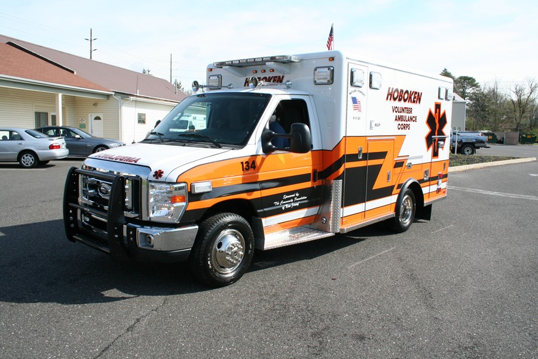
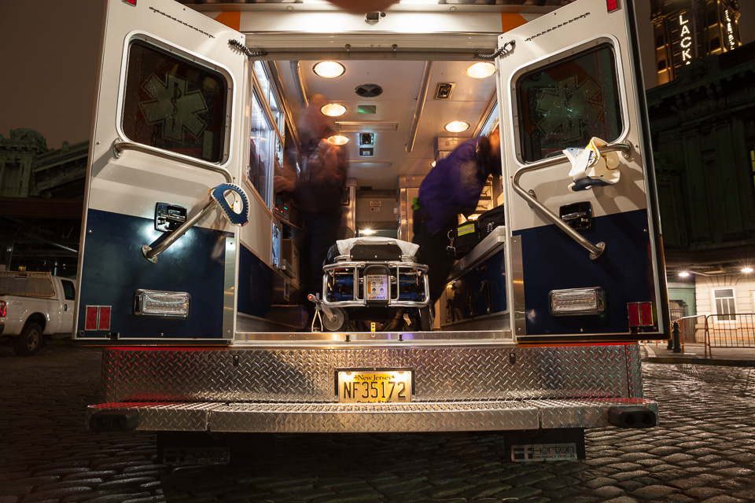
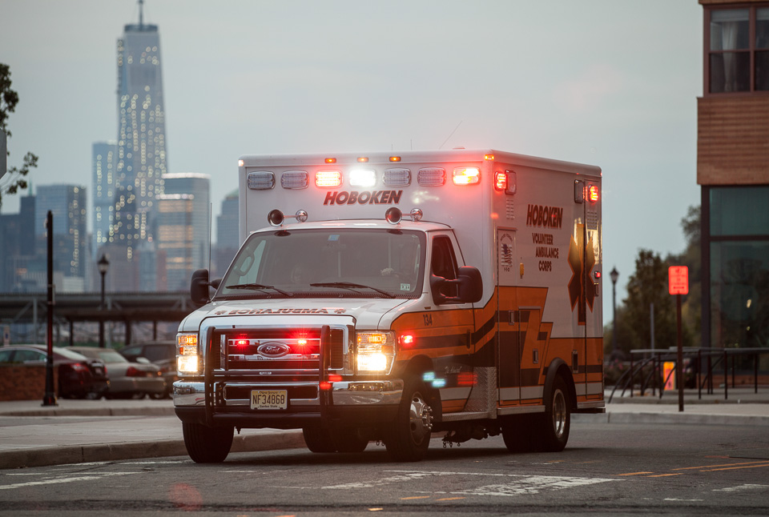

Hoboken Volunteer Ambulance Corps Serving since 1971
The Hoboken Volunteer Ambulance Corps operates a fleet of three front-line ambulances and three support vehicles.
Below are our vehicles plus brief descriptions.
Ambulances
- 
- 
- 

Support Vehicles


The Hoboken Volunteer Ambulance Corps operates seven front line vehicles: three ambulances, two first responders, a disaster unit and a field communications unit.
Ambulances
172 is a 2006 Horton box that has been remounted on a 2011 E-series gasoline chassis. Tt has "baller status", as the kids would put it.

429 is a 2010 AEV box mounted on a E-series diesel chassis. It is the oldest rig in our fleet and was the first to feature our new paint scheme. It also the only rig that survived Hurricane Sandy, which gives it some "street cred", as the kids would put it.
868 is a 2012 AEV box mounted on a E-series gasoline chassis. It features all LED lighting, twin Buell air horns and snow chains.
Support Vehicles

134 Charlie is our First Responder/Supervisor vehicle. It is a 2014 Ford Police Interceptor Utility. Radios, lighting and graphics were done by Odyssey Emergency Vehicles

134 Sierra is our back up first responder and also serves as our special operations vehicle.

134 Delta is equipped to handle mass casualty incident response, providing equipment where necessary